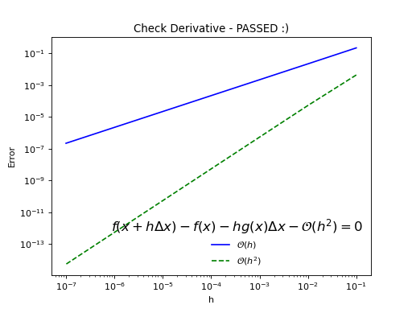

Testing SimPEG¶
Testing utilities (discretize.tests)¶
This module contains utilities for convergence testing
Classes¶
Functions¶
-
discretize.tests.setup_mesh(mesh_type, nC, nDim)[source]¶ For a given number of cells nc, generate a TensorMesh with uniform cells with edge length h=1/nc.
-
class
discretize.tests.OrderTest(methodName='runTest')[source]¶ OrderTest is a base class for testing convergence orders with respect to mesh sizes of integral/differential operators.
Mathematical Problem:
Given are an operator A and its discretization A[h]. For a given test function f and h –> 0 we compare:
\[error(h) = \| A[h](f) - A(f) \|_{\infty}\]Note that you can provide any norm.
Test is passed when estimated rate order of convergence is at least within the specified tolerance of the estimated rate supplied by the user.
Minimal example for a curl operator:
class TestCURL(OrderTest): name = "Curl" def getError(self): # For given Mesh, generate A[h], f and A(f) and return norm of error. fun = lambda x: np.cos(x) # i (cos(y)) + j (cos(z)) + k (cos(x)) sol = lambda x: np.sin(x) # i (sin(z)) + j (sin(x)) + k (sin(y)) Ex = fun(self.M.gridEx[:, 1]) Ey = fun(self.M.gridEy[:, 2]) Ez = fun(self.M.gridEz[:, 0]) f = np.concatenate((Ex, Ey, Ez)) Fx = sol(self.M.gridFx[:, 2]) Fy = sol(self.M.gridFy[:, 0]) Fz = sol(self.M.gridFz[:, 1]) Af = np.concatenate((Fx, Fy, Fz)) # Generate DIV matrix Ah = self.M.edge_curl curlE = Ah*E err = np.linalg.norm((Ah*f -Af), np.inf) return err def test_order(self): # runs the test self.orderTest()
See also: test_operatorOrder.py
-
name= 'Order Test'¶
-
expectedOrders= 2.0¶
-
tolerance= 0.85¶
-
meshSizes= [4, 8, 16, 32]¶
-
meshTypes= ['uniformTensorMesh']¶
-
meshDimension= 3¶
-
-
discretize.tests.rosenbrock(x, return_g=True, return_H=True)[source]¶ Rosenbrock function for testing GaussNewton scheme
-
discretize.tests.check_derivative(fctn, x0, num=7, plotIt=True, dx=None, expectedOrder=2, tolerance=0.85, eps=1e-10, ax=None)[source]¶ Basic derivative check
Compares error decay of 0th and 1st order Taylor approximation at point x0 for a randomized search direction.
- Parameters
fctn (callable) – function handle
x0 (numpy.ndarray) – point at which to check derivative
num (int) – number of times to reduce step length, h
plotIt (bool) – if you would like to plot
dx (numpy.ndarray) – step direction
expectedOrder (int) – The order that you expect the derivative to yield.
tolerance (float) – The tolerance on the expected order.
eps (float) – What is zero?
- Return type
- Returns
did you pass the test?!
from discretize import tests, utils import numpy as np def simplePass(x): return np.sin(x), utils.sdiag(np.cos(x)) tests.checkDerivative(simplePass, np.random.randn(5))
(Source code, png, hires.png, pdf)

{kind=link}
{kind=link}